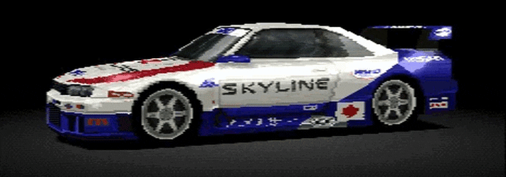
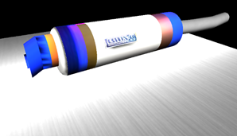
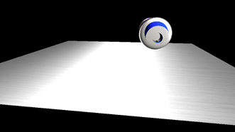
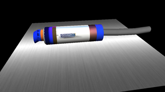

1. 初めに
今回は自分が乗っているバイクのマフラーをblenderで作成し、three.jsでモデルのデータを読み込んでWeb上に表示するという作業を行った。表示をする際にどのようなプラグラムを書いたのかについて述べる。
2．モデル作成 3DCGモデルの作成をプログラムですべて行うこともできたが、せっかくなので少し形が複雑なものを作ろうと考えblenderを使用して乗っているバイクのマフラーを作成した。作成するイメージとしてグランツーリスモの車選択画面をイメージし、それのパーツ版を作成した。
グラフィックを当時やっていたグランツーリスモ(上画像)に近づけてそれを高画質にしたかったのでテクスチャははっきりとした色の違いをつけた。

ヒートグラデーションの境目をくっきりとした。ニンテンドー64位のグラフィック。イメージに近くなった。
作成したモデルをdaeファイルでエクスポートした。このファイルをthree.jsで読み込む際にはColladaLoader.jsファイルが必要なので事前に使用するファイルにダウンロードした。この読み込んだモデルを作成していた空間に入れることでWeb上に表示することが出来た。
3.カメラと光の制御
参考にしたコードのままだとカメラの初期位置が合っていないのと光の位置がよくなかったので変更した。
カメラの初期座標(0,10,10)の状態。光の当たりも強すぎる。
3.1 変更、調整
少し位置が高かったのでy座標を8に、中央に持っていきたかったのでz座標を0、正面に回転させたいのでx座標を18に調整することでカメラの初期位置をマフラーの正面に持っていくことが出来た。ライトが非常に強かった原因はblenderで作成した時点で光を設定していたところに更に光を当てていたことであったので平行光源を削除した。これらの作業をしたことによってWeb上で見やすくなった。
静かに光る感じをうまく作ることが出来た。
4.完成、制作を終えて
完成した3Dモデルをページに表示することが出来たbeams.html。制作をしていく中でHTMLで3Dモデルを制作するためのthree.jsについて学ぶことが出来た。3Dモデルの作成ではないがWebページの形態や作成方法についても学ぶことが出来た。反省点としてモデルを読み込んだ際の座標の調整がうまくいかずにカメラの初期座標を調整しなければならなかった事が挙げられる。全く分からなかった状態から調べ、エラーの内容を把握して資料を探して解決していくことの達成感と経験は今後に活かしていきたい。
[参考文献]
Three.js入門サイト https://ics.media/tutorial-three/
1時間で作るホームページ：1時間でHTMLを使ってホームページを作ろう！http://www.shoshinsha.com/hp/1hour/1hour01.html
CodeAid :Shift JISやEUCなどからUTF-8へ変換する方法 https://codeaid.jp/blog/exchange-utf8/